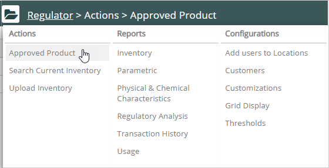
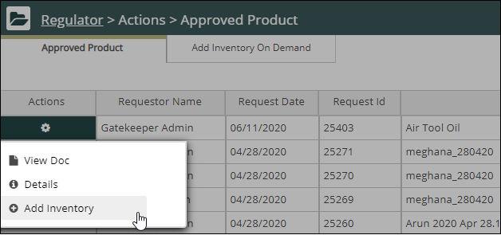
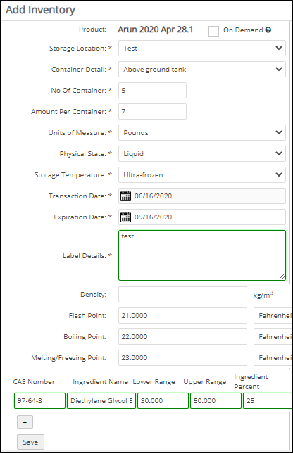
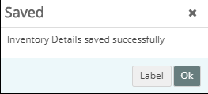
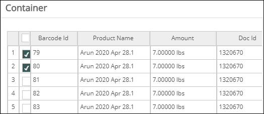
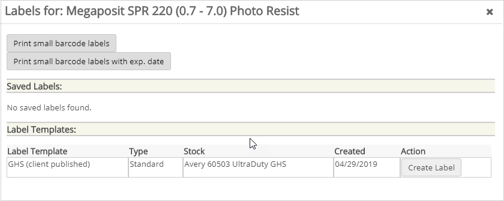
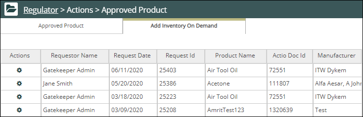

). The Regulator navigation pane displays. Select Approved Product from the Actions list. The Approved Product tab with the list of approved products opens.
). The Regulator navigation pane displays. Select Approved Product from the Actions list. The Approved Product tab with the list of approved products opens.
Approved Product: Add a product that has been approved through a Gatekeeper request. If it has not yet been requested, you can log a new request and wait for approval to add the product to inventory.
To add inventory to your current location in Regulator:
You can add inventory to your current location by using two tabs:
The steps for adding inventory to an approved product and on-demand are similar.
To add inventory to your current location:
). The Regulator navigation pane displays. Select Approved Product from the Actions list. The Approved Product tab with the list of approved products opens.
From the resulting product list, on the Approved Product tab, click the icon in the Actions column for the product you want, and select Add Inventory. The Add Inventory window opens.

Add the inventory details. Check the On-Demand box to add the product to inventory without the approval process.

Storage Location: The location for this inventory. Only Vault locations that are also assigned as Regulator locations appear in the list.
Container Detail: The container type.
No. of Containers: The number of containers.
Units of Measure: The unit of measure for the amount in the container.
Amount Per Container: Enter the amount in each container.
Physical State: Choose the physical state of the substance.
Storage Temperature: The temperature required when the inventory will be stored at the location.
Transaction Date: Default is today's date. For a different date, enter a new date in the Date field or pick from the calendar.
Expiration Date: Default is one year from the transaction date.
Label Details: Enter label information in this field.
Physical and Chemical characteristics: If the product is managed by the system, ingredient information from the IntelligenTEXT database is displayed. If not, you can add it.
Custom Fields: If custom fields are configured in your Vault account, they will also be displayed for editing.
In the confirmation dialog, click OK to confirm without printing a label. Or, to print labels for the new inventory, click Label.

If you chose to print labels, in the pop-up window select the containers for which you want to print labels and click Print Label.

In the Labels dialog, select the label options. You can select a label template, or create a free form label. You can also print small barcode labels.


Note: Use the Add Inventory On-Demand tab to add inventory of the products that have been either loaded by batch or selected to be placed on the tab bypassing the approval process.
Related Topics: